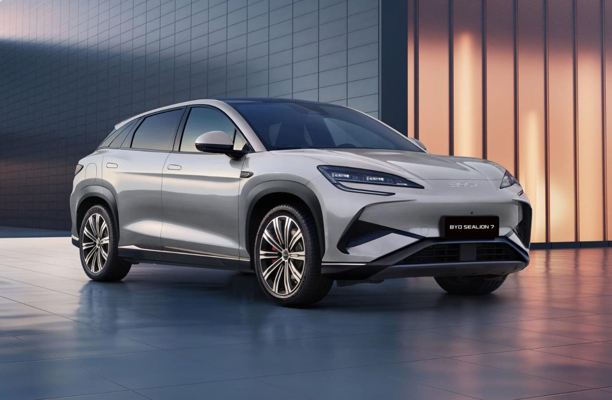

Descubre el Futuro de la Movilidad con BYD
BYD, líder en tecnología de vehículos eléctricos, transforma la manera en que nos movemos y cuidamos el planeta.
¿Quiénes Somos?
BYD (Build Your Dreams) es una empresa global dedicada a ofrecer soluciones de transporte innovadoras y sostenibles.
Nuestros Modelos Destacados
Descubre la diversidad y excelencia de nuestros vehículos:
100% Eléctricos
-
• BYD Dolphin: Compacto, eficiente y lleno de estilo.
• BYD Seal: Elegancia y rendimiento en un sedán eléctrico.
Híbridos Enchufables
-
• BYD Tang: Una SUV con potencia híbrida y tecnología avanzada.
• BYD Shark: Diseñado para la aventura con eficiencia híbrida 4x4.
Visita nuestro sitio web en Costa Rica
Clic aquíNuestros modelos más vendidos
BYD SEALION 7